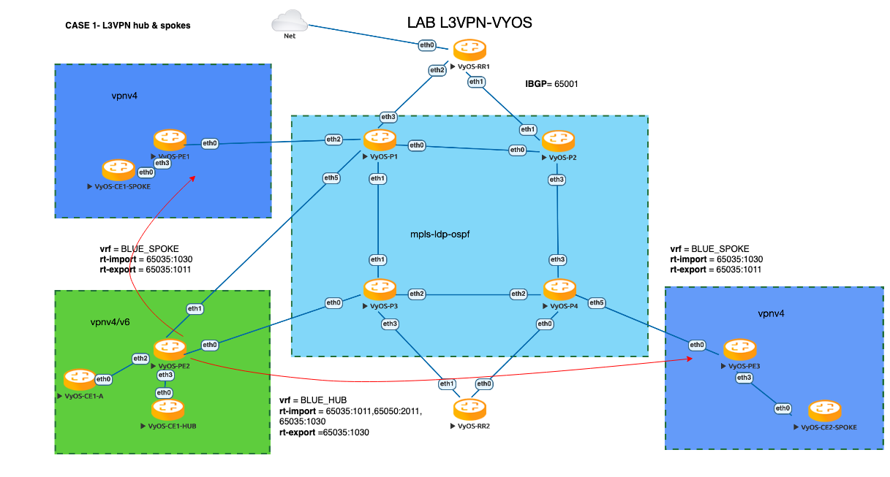

L3VPN for Hub-and-Spoke connectivity with VyOS
IP/MPLS technology is widely used by various service providers and large enterprises in order to achieve better network scalability, manageability and flexibility. It also provides the possibility to deliver different services for the customers in a seamless manner. Layer 3 VPN (L3VPN) is a type of VPN mode that is built and delivered through OSI layer 3 networking technologies. Often the border gateway protocol (BGP) is used to send and receive VPN-related data that is responsible for the control plane. L3VPN utilizes virtual routing and forwarding (VRF) techniques to receive and deliver user data as well as separate data planes of the end-users. It is built using a combination of IP- and MPLS-based information. Generally, L3VPNs are used to send data on back-end VPN infrastructures, such as for VPN connections between data centres, HQs and branches.
An L3VPN consists of multiple access links, multiple VPN routing and forwarding (VRF) tables, and multiple MPLS paths or multiple P2MP LSPs. An L3VPN can be configured to connect two or more customer sites. In hub-and-spoke MPLS L3VPN environments, the spoke routers need to have unique Route Distinguishers (RDs). In order to use the hub site as a transit point for connectivity in such an environment, the spoke sites export their routes to the hub. Spokes can talk to hubs, but never have direct paths to other spokes. All traffic between spokes is controlled and delivered over the hub site.
To deploy a Layer3 VPN with MPLS on VyOS, we should meet a couple requirements in order to properly implement the solution. We’ll use the following nodes in our LAB environment:
2 x Route reflectors (VyOS-RRx)
4 x Provider routers (VyOS-Px)
3 x Provider Edge (VyOs-PEx)
3 x Customer Edge (VyOS-CEx)
The following software was used in the creation of this document:
Operating system: VyOS
Version: 1.4-rolling-202110310317
Image name: vyos-1.4-rolling-202110310317-amd64.iso
NOTE: VyOS Router (tested with VyOS 1.4-rolling-202110310317) – The configurations below are specifically for VyOS 1.4.x.
General information can be found in the L3VPN VRFs chapter.
Topology
{kind=link}
How does it work?
As we know the main assumption of L3VPN “Hub and Spoke” is, that the traffic between spokes have to pass via hub, in our scenario VyOS-PE2 is the Hub PE and the VyOS-CE1-HUB is the central customer office device that is responsible for controlling access between all spokes and announcing its network prefixes (10.0.0.100/32). VyOS-PE2 has the main VRF (its name is BLUE_HUB), its own Route-Distinguisher(RD) and route-target import/export lists. Multiprotocol-BGP(MP-BGP) delivers L3VPN related control-plane information to the nodes across network where PEs Spokes import the route-target 60535:1030 (this is export route-target of vrf BLUE_HUB) and export its own route-target 60535:1011(this is vrf BLUE_SPOKE export route-target). Therefore, the Customer edge nodes can only learn the network prefixes of the HUB site [10.0.0.100/32]. For this example VyOS-CE1 has network prefixes [10.0.0.80/32] / VyOS-CE2 has network prefixes [10.0.0.90/32]. Route-Reflector devices VyOS-RR1 and VyOS-RR2 are used to simplify network routes exchange and minimize iBGP peerings between devices.
L3VPN configuration parameters table:
Node |
Role |
VRF |
RD |
RT import |
RT export |
VyOS-PE2 |
Hub |
BLUE_HUB |
10.80.80.1:1011 |
65035:1011 65035:1030 |
65035:1030 |
VyOS-PE1 |
Spoke |
BLUE_SPOKE |
10.50.50.1:1011 |
65035:1030 |
65035:1011 |
VyOS-PE3 |
Spoke |
BLUE_SPOKE |
10.60.60.1:1011 |
65035:1030 |
65035:1011 |
Configuration
Step-1: Configuring IGP and enabling MPLS LDP
At the first step we need to configure the IP/MPLS backbone network using OSPF as IGP protocol and LDP as label-switching protocol for the base connectivity between P (rovider), P (rovider) E (dge) and R (oute) R (eflector) nodes:
VyOS-P1:
# interfaces
set interfaces dummy dum10 address '10.0.0.3/32'
set interfaces ethernet eth0 address '172.16.30.1/24'
set interfaces ethernet eth1 address '172.16.40.1/24'
set interfaces ethernet eth2 address '172.16.90.1/24'
set interfaces ethernet eth3 address '172.16.10.1/24'
set interfaces ethernet eth5 address '172.16.100.1/24'
# protocols ospf+ldp
set protocols mpls interface 'eth1'
set protocols mpls interface 'eth2'
set protocols mpls interface 'eth3'
set protocols mpls interface 'eth5'
set protocols mpls interface 'eth0'
set protocols mpls ldp discovery transport-ipv4-address '10.0.0.3'
set protocols mpls ldp interface 'eth0'
set protocols mpls ldp interface 'eth1'
set protocols mpls ldp interface 'eth2'
set protocols mpls ldp interface 'eth3'
set protocols mpls ldp interface 'eth5'
set protocols mpls ldp router-id '10.0.0.3'
set protocols ospf area 0 network '0.0.0.0/0'
set protocols ospf parameters abr-type 'cisco'
set protocols ospf parameters router-id '10.0.0.3
VyOS-P2:
# interfaces
set interfaces dummy dum10 address '10.0.0.4/32'
set interfaces ethernet eth0 address '172.16.30.2/24'
set interfaces ethernet eth1 address '172.16.20.1/24'
set interfaces ethernet eth2 address '172.16.120.1/24'
set interfaces ethernet eth3 address '172.16.60.1/24'
# protocols ospf+ldp
set protocols mpls interface 'eth1'
set protocols mpls interface 'eth2'
set protocols mpls interface 'eth3'
set protocols mpls interface 'eth0'
set protocols mpls ldp discovery transport-ipv4-address '10.0.0.4'
set protocols mpls ldp interface 'eth0'
set protocols mpls ldp interface 'eth1'
set protocols mpls ldp interface 'eth2'
set protocols mpls ldp interface 'eth3'
set protocols mpls ldp router-id '10.0.0.4'
set protocols ospf area 0 network '0.0.0.0/0'
set protocols ospf parameters abr-type 'cisco'
set protocols ospf parameters router-id '10.0.0.4'
VyOS-P3:
# interfaces
set interfaces dummy dum10 address '10.0.0.5/32'
set interfaces ethernet eth0 address '172.16.110.1/24'
set interfaces ethernet eth1 address '172.16.40.2/24'
set interfaces ethernet eth2 address '172.16.50.1/24'
set interfaces ethernet eth3 address '172.16.70.1/24'
# protocols ospf + ldp
set protocols mpls interface 'eth1'
set protocols mpls interface 'eth2'
set protocols mpls interface 'eth3'
set protocols mpls interface 'eth0'
set protocols mpls ldp discovery transport-ipv4-address '10.0.0.5'
set protocols mpls ldp interface 'eth0'
set protocols mpls ldp interface 'eth1'
set protocols mpls ldp interface 'eth2'
set protocols mpls ldp interface 'eth3'
set protocols mpls ldp router-id '10.0.0.5'
set protocols ospf area 0 network '0.0.0.0/0'
set protocols ospf parameters abr-type 'cisco'
set protocols ospf parameters router-id '10.0.0.5'
VyOS-P4:
# interfaces
set interfaces dummy dum10 address '10.0.0.6/32'
set interfaces ethernet eth0 address '172.16.80.2/24'
set interfaces ethernet eth1 address '172.16.130.1/24'
set interfaces ethernet eth2 address '172.16.50.2/24'
set interfaces ethernet eth3 address '172.16.60.2/24'
set interfaces ethernet eth5 address '172.16.140.1/24'
# protocols ospf + ldp
set protocols mpls interface 'eth1'
set protocols mpls interface 'eth2'
set protocols mpls interface 'eth3'
set protocols mpls interface 'eth0'
set protocols mpls interface 'eth5'
set protocols mpls ldp discovery transport-ipv4-address '10.0.0.6'
set protocols mpls ldp interface 'eth0'
set protocols mpls ldp interface 'eth1'
set protocols mpls ldp interface 'eth2'
set protocols mpls ldp interface 'eth3'
set protocols mpls ldp interface 'eth5'
set protocols mpls ldp router-id '10.0.0.6'
set protocols ospf area 0 network '0.0.0.0/0'
set protocols ospf parameters abr-type 'cisco'
set protocols ospf parameters router-id '10.0.0.6'
VyOS-PE1:
# interfaces
set interfaces dummy dum10 address '10.0.0.7/32'
set interfaces ethernet eth0 address '172.16.90.2/24'
# protocols ospf + ldp
set protocols mpls interface 'eth0'
set protocols mpls ldp discovery transport-ipv4-address '10.0.0.7'
set protocols mpls ldp interface 'eth0'
set protocols mpls ldp router-id '10.0.0.7'
set protocols ospf area 0 network '0.0.0.0/0'
set protocols ospf parameters abr-type 'cisco'
set protocols ospf parameters router-id '10.0.0.7'
VyOS-PE2:
# interfaces
set interfaces dummy dum10 address '10.0.0.8/32'
set interfaces ethernet eth0 address '172.16.110.2/24'
set interfaces ethernet eth1 address '172.16.100.2/24'
set interfaces ethernet eth2 address '172.16.80.1/24'
# protocols ospf + ldp
set protocols mpls interface 'eth0'
set protocols mpls interface 'eth1'
set protocols mpls ldp discovery transport-ipv4-address '10.0.0.8'
set protocols mpls ldp interface 'eth0'
set protocols mpls ldp interface 'eth1'
set protocols mpls ldp router-id '10.0.0.8'
set protocols ospf area 0 network '0.0.0.0/0'
set protocols ospf parameters abr-type 'cisco'
set protocols ospf parameters router-id '10.0.0.8'
VyOS-PE3:
# interfaces
set interfaces dummy dum10 address '10.0.0.10/32'
set interfaces ethernet eth0 address '172.16.140.2/24'
# protocols ospf + ldp
set protocols mpls interface 'eth0'
set protocols mpls ldp discovery transport-ipv4-address '10.0.0.10'
set protocols mpls ldp interface 'eth0'
set protocols mpls ldp router-id '10.0.0.10'
set protocols ospf area 0 network '0.0.0.0/0'
set protocols ospf parameters abr-type 'cisco'
set protocols ospf parameters router-id '10.0.0.10'
VyOS-RR1:
# interfaces
set interfaces ethernet eth1 address '172.16.20.2/24'
set interfaces ethernet eth2 address '172.16.10.2/24'
set interfaces dummy dum10 address '10.0.0.1/32'
# protocols ospf + ldp
set protocols mpls interface 'eth1'
set protocols mpls interface 'eth2'
set protocols mpls ldp discovery transport-ipv4-address '10.0.0.1'
set protocols mpls ldp interface 'eth1'
set protocols mpls ldp interface 'eth2'
set protocols mpls ldp router-id '10.0.0.1'
set protocols ospf area 0 network '0.0.0.0/0'
set protocols ospf parameters abr-type 'cisco'
set protocols ospf parameters router-id '10.0.0.1'
VyOS-RR2:
# interfaces
set interfaces ethernet eth0 address '172.16.80.1/24'
set interfaces ethernet eth1 address '172.16.70.2/24'
set interfaces dummy dum10 address '10.0.0.2/32'
# protocols ospf + ldp
set protocols mpls interface 'eth0'
set protocols mpls interface 'eth1'
set protocols mpls ldp discovery transport-ipv4-address '10.0.0.2'
set protocols mpls ldp interface 'eth1'
set protocols mpls ldp interface 'eth0'
set protocols mpls ldp router-id '10.0.0.2'
set protocols ospf area 0 network '0.0.0.0/0'
set protocols ospf parameters abr-type 'cisco'
set protocols ospf parameters router-id '10.0.0.2'
Step-2: Configuring iBGP for L3VPN control-plane
At this step we are going to enable iBGP protocol on MPLS nodes and Route Reflectors (two routers for redundancy) that will deliver IPv4 VPN (L3VPN) routes between them:
VyOS-RR1:
set protocols bgp system-as '65001'
set protocols bgp neighbor 10.0.0.7 address-family ipv4-vpn route-reflector-client
set protocols bgp neighbor 10.0.0.7 peer-group 'RR_VPNv4'
set protocols bgp neighbor 10.0.0.8 address-family ipv4-vpn route-reflector-client
set protocols bgp neighbor 10.0.0.8 peer-group 'RR_VPNv4'
set protocols bgp neighbor 10.0.0.10 address-family ipv4-vpn route-reflector-client
set protocols bgp neighbor 10.0.0.10 peer-group 'RR_VPNv4'
set protocols bgp parameters cluster-id '10.0.0.1'
set protocols bgp parameters log-neighbor-changes
set protocols bgp parameters router-id '10.0.0.1'
set protocols bgp peer-group RR_VPNv4 remote-as '65001'
set protocols bgp peer-group RR_VPNv4 update-source 'dum10'
VyOS-RR2:
set protocols bgp system-as '65001'
set protocols bgp neighbor 10.0.0.7 address-family ipv4-vpn route-reflector-client
set protocols bgp neighbor 10.0.0.7 peer-group 'RR_VPNv4'
set protocols bgp neighbor 10.0.0.8 address-family ipv4-vpn route-reflector-client
set protocols bgp neighbor 10.0.0.8 peer-group 'RR_VPNv4'
set protocols bgp neighbor 10.0.0.10 address-family ipv4-vpn route-reflector-client
set protocols bgp neighbor 10.0.0.10 peer-group 'RR_VPNv4'
set protocols bgp parameters cluster-id '10.0.0.1'
set protocols bgp parameters log-neighbor-changes
set protocols bgp parameters router-id '10.0.0.2'
set protocols bgp peer-group RR_VPNv4 remote-as '65001'
set protocols bgp peer-group RR_VPNv4 update-source 'dum10'
VyOS-PE1:
set protocols bgp system-as '65001'
set protocols bgp neighbor 10.0.0.1 address-family ipv4-vpn nexthop-self
set protocols bgp neighbor 10.0.0.1 peer-group 'RR_VPNv4'
set protocols bgp neighbor 10.0.0.2 address-family ipv4-vpn nexthop-self
set protocols bgp neighbor 10.0.0.2 peer-group 'RR_VPNv4'
set protocols bgp parameters log-neighbor-changes
set protocols bgp parameters router-id '10.0.0.7'
set protocols bgp peer-group RR_VPNv4 remote-as '65001'
set protocols bgp peer-group RR_VPNv4 update-source 'dum10'
VyOS-PE2:
set protocols bgp system-as '65001'
set protocols bgp neighbor 10.0.0.1 address-family ipv4-vpn nexthop-self
set protocols bgp neighbor 10.0.0.1 peer-group 'RR_VPNv4'
set protocols bgp neighbor 10.0.0.2 address-family ipv4-vpn nexthop-self
set protocols bgp neighbor 10.0.0.2 peer-group 'RR_VPNv4'
set protocols bgp parameters log-neighbor-changes
set protocols bgp parameters router-id '10.0.0.8'
set protocols bgp peer-group RR_VPNv4 remote-as '65001'
set protocols bgp peer-group RR_VPNv4 update-source 'dum10'
VyOS-PE3:
set protocols bgp system-as '65001'
set protocols bgp neighbor 10.0.0.1 address-family ipv4-vpn nexthop-self
set protocols bgp neighbor 10.0.0.1 peer-group 'RR_VPNv4'
set protocols bgp neighbor 10.0.0.2 address-family ipv4-vpn nexthop-self
set protocols bgp neighbor 10.0.0.2 peer-group 'RR_VPNv4'
set protocols bgp parameters log-neighbor-changes
set protocols bgp parameters router-id '10.0.0.10'
set protocols bgp peer-group RR_VPNv4 remote-as '65001'
set protocols bgp peer-group RR_VPNv4 update-source 'dum10'
Step-3: Configuring L3VPN VRFs on PE nodes
This section provides configuration steps for setting up VRFs on our PE nodes including CE facing interfaces, BGP, rd and route-target import/export based on the pre-defined parameters.
VyOS-PE1:
# VRF settings
set vrf name BLUE_SPOKE table '200'
set vrf name BLUE_SPOKE protocols bgp address-family ipv4-unicast export vpn
set vrf name BLUE_SPOKE protocols bgp address-family ipv4-unicast import vpn
set vrf name BLUE_SPOKE protocols bgp address-family ipv4-unicast label vpn export 'auto'
set vrf name BLUE_SPOKE protocols bgp address-family ipv4-unicast network 10.50.50.0/24
set vrf name BLUE_SPOKE protocols bgp address-family ipv4-unicast rd vpn export '10.50.50.1:1011'
set vrf name BLUE_SPOKE protocols bgp address-family ipv4-unicast redistribute connected
set vrf name BLUE_SPOKE protocols bgp address-family ipv4-unicast route-target vpn export '65035:1011'
set vrf name BLUE_SPOKE protocols bgp address-family ipv4-unicast route-target vpn import '65035:1030'
set vrf name BLUE_SPOKE protocols bgp system-as '65001'
set vrf name BLUE_SPOKE protocols bgp neighbor 10.50.50.2 address-family ipv4-unicast as-override
set vrf name BLUE_SPOKE protocols bgp neighbor 10.50.50.2 remote-as '65035'
# interfaces
set interfaces ethernet eth3 address '10.50.50.1/24'
set interfaces ethernet eth3 vrf 'BLUE_SPOKE'
VyOS-PE2:
# VRF settings
set vrf name BLUE_HUB table '400'
set vrf name BLUE_HUB protocols bgp address-family ipv4-unicast export vpn
set vrf name BLUE_HUB protocols bgp address-family ipv4-unicast import vpn
set vrf name BLUE_HUB protocols bgp address-family ipv4-unicast label vpn export 'auto'
set vrf name BLUE_HUB protocols bgp address-family ipv4-unicast network 10.80.80.0/24
set vrf name BLUE_HUB protocols bgp address-family ipv4-unicast rd vpn export '10.80.80.1:1011'
set vrf name BLUE_HUB protocols bgp address-family ipv4-unicast redistribute connected
set vrf name BLUE_HUB protocols bgp address-family ipv4-unicast route-target vpn export '65035:1030'
set vrf name BLUE_HUB protocols bgp address-family ipv4-unicast route-target vpn import '65035:1011 65050:2011 65035:1030'
set vrf name BLUE_HUB protocols bgp system-as '65001'
set vrf name BLUE_HUB protocols bgp neighbor 10.80.80.2 address-family ipv4-unicast as-override
set vrf name BLUE_HUB protocols bgp neighbor 10.80.80.2 remote-as '65035'
# interfaces
set interfaces ethernet eth3 address '10.80.80.1/24'
set interfaces ethernet eth3 vrf 'BLUE_HUB'
VyOS-PE3:
# VRF settings
set vrf name BLUE_SPOKE table '200'
set vrf name BLUE_SPOKE protocols bgp address-family ipv4-unicast export vpn
set vrf name BLUE_SPOKE protocols bgp address-family ipv4-unicast import vpn
set vrf name BLUE_SPOKE protocols bgp address-family ipv4-unicast label vpn export 'auto'
set vrf name BLUE_SPOKE protocols bgp address-family ipv4-unicast network 10.60.60.0/24
set vrf name BLUE_SPOKE protocols bgp address-family ipv4-unicast rd vpn export '10.60.60.1:1011'
set vrf name BLUE_SPOKE protocols bgp address-family ipv4-unicast redistribute connected
set vrf name BLUE_SPOKE protocols bgp address-family ipv4-unicast route-target vpn export '65035:1011'
set vrf name BLUE_SPOKE protocols bgp address-family ipv4-unicast route-target vpn import '65035:1030'
set vrf name BLUE_SPOKE protocols bgp system-as '65001'
set vrf name BLUE_SPOKE protocols bgp neighbor 10.60.60.2 address-family ipv4-unicast as-override
set vrf name BLUE_SPOKE protocols bgp neighbor 10.60.60.2 remote-as '65035'
# interfaces
set interfaces ethernet eth3 address '10.60.60.1/24'
set interfaces ethernet eth3 vrf 'BLUE_SPOKE'
Step-4: Configuring CE nodes
Dynamic routing used between CE and PE nodes and eBGP peering established for the route exchanging between them. All routes received by PEs are then exported to L3VPN and delivered from Spoke sites to Hub and vise-versa based on previously configured L3VPN parameters.
VyOS-CE1-SPOKE:
# interfaces
set interfaces dummy dum20 address '10.0.0.80/32'
set interfaces ethernet eth0 address '10.50.50.2/24'
# BGP for peering with PE
set protocols bgp system-as 65035
set protocols bgp address-family ipv4-unicast network 10.0.0.80/32
set protocols bgp neighbor 10.50.50.1 ebgp-multihop '2'
set protocols bgp neighbor 10.50.50.1 remote-as '65001'
set protocols bgp neighbor 10.50.50.1 update-source 'eth0'
set protocols bgp parameters log-neighbor-changes
set protocols bgp parameters router-id '10.50.50.2'
VyOS-CE1-HUB:
# interfaces
set interfaces dummy dum20 address '10.0.0.100/32'
set interfaces ethernet eth0 address '10.80.80.2/24'
# BGP for peering with PE
set protocols bgp system-as 65035
set protocols bgp address-family ipv4-unicast network 10.0.0.100/32
set protocols bgp address-family ipv4-unicast redistribute connected
set protocols bgp neighbor 10.80.80.1 ebgp-multihop '2'
set protocols bgp neighbor 10.80.80.1 remote-as '65001'
set protocols bgp neighbor 10.80.80.1 update-source 'eth0'
set protocols bgp parameters log-neighbor-changes
set protocols bgp parameters router-id '10.80.80.2'
VyOS-CE2-SPOKE:
# interfaces
set interfaces dummy dum20 address '10.0.0.90/32'
set interfaces ethernet eth0 address '10.60.60.2/24'
# BGP for peering with PE
set protocols bgp system-as 65035
set protocols bgp address-family ipv4-unicast network 10.0.0.90/32
set protocols bgp neighbor 10.60.60.1 ebgp-multihop '2'
set protocols bgp neighbor 10.60.60.1 remote-as '65001'
set protocols bgp neighbor 10.60.60.1 update-source 'eth0'
set protocols bgp parameters log-neighbor-changes
set protocols bgp parameters router-id '10.60.60.2'
Step-5: Verification
This section describes verification commands for MPLS/BGP/LDP protocols and L3VPN related routes as well as diagnosis and reachability checks between CE nodes.
Let’s check IPv4 routing and MPLS information on provider nodes (same procedure for all P nodes):
“show ip ospf neighbor” for checking ospf relationship
vyos@VyOS-P1:~$ show ip ospf neighbor
Neighbor ID Pri State Dead Time Address Interface RXmtL RqstL DBsmL
10.0.0.4 1 Full/Backup 34.718s 172.16.30.2 eth0:172.16.30.1 0 0 0
10.0.0.5 1 Full/Backup 35.132s 172.16.40.2 eth1:172.16.40.1 0 0 0
10.0.0.7 1 Full/Backup 34.764s 172.16.90.2 eth2:172.16.90.1 0 0 0
10.0.0.1 1 Full/Backup 35.642s 172.16.10.2 eth3:172.16.10.1 0 0 0
10.0.0.8 1 Full/Backup 35.484s 172.16.100.2 eth5:172.16.100.1 0 0 0
“show mpls ldp neighbor “ for checking ldp neighbors
vyos@VyOS-P1:~$ show mpls ldp neighbor
AF ID State Remote Address Uptime
ipv4 10.0.0.1 OPERATIONAL 10.0.0.1 07w5d06h
ipv4 10.0.0.4 OPERATIONAL 10.0.0.4 09w3d00h
ipv4 10.0.0.5 OPERATIONAL 10.0.0.5 09w2d23h
ipv4 10.0.0.7 OPERATIONAL 10.0.0.7 03w0d01h
ipv4 10.0.0.8 OPERATIONAL 10.0.0.8 01w3d02h
“show mpls ldp binding” for checking mpls label assignment
vyos@VyOS-P1:~$ show mpls ldp discovery
AF Destination Nexthop Local Label Remote Label In Use
ipv4 10.0.0.1/32 10.0.0.1 23 imp-null yes
ipv4 10.0.0.1/32 10.0.0.4 23 20 no
ipv4 10.0.0.1/32 10.0.0.5 23 17 no
ipv4 10.0.0.1/32 10.0.0.7 23 16 no
ipv4 10.0.0.1/32 10.0.0.8 23 16 no
ipv4 10.0.0.2/32 10.0.0.1 20 16 no
ipv4 10.0.0.2/32 10.0.0.4 20 22 no
ipv4 10.0.0.2/32 10.0.0.5 20 24 yes
ipv4 10.0.0.2/32 10.0.0.7 20 17 no
ipv4 10.0.0.2/32 10.0.0.8 20 17 no
ipv4 10.0.0.3/32 10.0.0.1 imp-null 17 no
ipv4 10.0.0.3/32 10.0.0.4 imp-null 16 no
ipv4 10.0.0.3/32 10.0.0.5 imp-null 18 no
ipv4 10.0.0.3/32 10.0.0.7 imp-null 18 no
ipv4 10.0.0.3/32 10.0.0.8 imp-null 18 no
ipv4 10.0.0.4/32 10.0.0.1 16 18 no
ipv4 10.0.0.4/32 10.0.0.4 16 imp-null yes
ipv4 10.0.0.4/32 10.0.0.5 16 19 no
ipv4 10.0.0.4/32 10.0.0.7 16 19 no
ipv4 10.0.0.4/32 10.0.0.8 16 19 no
ipv4 10.0.0.5/32 10.0.0.1 21 19 no
ipv4 10.0.0.5/32 10.0.0.4 21 17 no
ipv4 10.0.0.5/32 10.0.0.5 21 imp-null yes
ipv4 10.0.0.5/32 10.0.0.7 21 20 no
ipv4 10.0.0.5/32 10.0.0.8 21 20 no
ipv4 10.0.0.6/32 10.0.0.1 17 20 no
ipv4 10.0.0.6/32 10.0.0.4 17 23 yes
ipv4 10.0.0.6/32 10.0.0.5 17 21 yes
ipv4 10.0.0.6/32 10.0.0.7 17 21 no
ipv4 10.0.0.6/32 10.0.0.8 17 21 no
ipv4 10.0.0.7/32 10.0.0.1 22 21 no
ipv4 10.0.0.7/32 10.0.0.4 22 18 no
ipv4 10.0.0.7/32 10.0.0.5 22 20 no
ipv4 10.0.0.7/32 10.0.0.7 22 imp-null yes
ipv4 10.0.0.7/32 10.0.0.8 22 22 no
ipv4 10.0.0.8/32 10.0.0.1 24 22 no
ipv4 10.0.0.8/32 10.0.0.4 24 19 no
ipv4 10.0.0.8/32 10.0.0.5 24 16 no
ipv4 10.0.0.8/32 10.0.0.7 24 22 no
ipv4 10.0.0.8/32 10.0.0.8 24 imp-null yes
ipv4 10.0.0.9/32 10.0.0.1 18 23 no
ipv4 10.0.0.9/32 10.0.0.4 18 21 yes
ipv4 10.0.0.9/32 10.0.0.5 18 22 no
ipv4 10.0.0.9/32 10.0.0.7 18 23 no
ipv4 10.0.0.9/32 10.0.0.8 18 23 no
ipv4 10.0.0.10/32 10.0.0.1 19 24 no
ipv4 10.0.0.10/32 10.0.0.4 19 24 yes
ipv4 10.0.0.10/32 10.0.0.5 19 23 yes
ipv4 10.0.0.10/32 10.0.0.7 19 24 no
ipv4 10.0.0.10/32 10.0.0.8 19 24 no
Now we’re checking iBGP status and routes from route-reflector nodes to other devices:
“show bgp ipv4 vpn summary” for checking BGP VPNv4 neighbors:
vyos@VyOS-RR1:~$ show bgp ipv4 vpn summary
BGP router identifier 10.0.0.1, local AS number 65001 vrf-id 0
BGP table version 0
RIB entries 9, using 1728 bytes of memory
Peers 4, using 85 KiB of memory
Peer groups 1, using 64 bytes of memory
Neighbor V AS MsgRcvd MsgSent TblVer InQ OutQ Up/Down State/PfxRcd PfxSnt
10.0.0.7 4 65001 7719 7733 0 0 0 5d07h56m 2 10
10.0.0.8 4 65001 7715 7724 0 0 0 5d08h28m 4 10
10.0.0.9 4 65001 7713 7724 0 0 0 5d08h28m 2 10
10.0.0.10 4 65001 7713 7724 0 0 0 5d08h28m 2 10
Total number of neighbors 4
“show bgp ipv4 vpn” for checking all VPNv4 prefixes information:
vyos@VyOS-RR1:~$ show bgp ipv4 vpn
BGP table version is 2, local router ID is 10.0.0.1, vrf id 0
Default local pref 100, local AS 65001
Status codes: s suppressed, d damped, h history, * valid, > best, = multipath,
i internal, r RIB-failure, S Stale, R Removed
Nexthop codes: @NNN nexthop's vrf id, < announce-nh-self
Origin codes: i - IGP, e - EGP, ? - incomplete
Network Next Hop Metric LocPrf Weight Path
Route Distinguisher: 10.50.50.1:1011
*>i10.50.50.0/24 10.0.0.7 0 100 0 i
UN=10.0.0.7 EC{65035:1011} label=80 type=bgp, subtype=0
*>i80.80.80.80/32 10.0.0.7 0 100 0 65035 i
UN=10.0.0.7 EC{65035:1011} label=80 type=bgp, subtype=0
Route Distinguisher: 10.60.60.1:1011
*>i10.60.60.0/24 10.0.0.10 0 100 0 i
UN=10.0.0.10 EC{65035:1011} label=80 type=bgp, subtype=0
*>i90.90.90.90/32 10.0.0.10 0 100 0 65035 i
UN=10.0.0.10 EC{65035:1011} label=80 type=bgp, subtype=0
Route Distinguisher: 10.80.80.1:1011
*>i10.80.80.0/24 10.0.0.8 0 100 0 i
UN=10.0.0.8 EC{65035:1030} label=80 type=bgp, subtype=0
*>i100.100.100.100/32
10.0.0.8 0 100 0 65035 i
UN=10.0.0.8 EC{65035:1030} label=80 type=bgp, subtype=0
Route Distinguisher: 172.16.80.1:2011
*>i10.110.110.0/24 10.0.0.8 0 100 0 65050 i
UN=10.0.0.8 EC{65050:2011} label=81 type=bgp, subtype=0
*>i172.16.80.0/24 10.0.0.8 0 100 0 i
UN=10.0.0.8 EC{65050:2011} label=81 type=bgp, subtype=0
Route Distinguisher: 172.16.100.1:2011
*>i10.210.210.0/24 10.0.0.9 0 100 0 65050 i
UN=10.0.0.9 EC{65050:2011} label=80 type=bgp, subtype=0
*>i172.16.100.0/24 10.0.0.9 0 100 0 i
UN=10.0.0.9 EC{65050:2011} label=80 type=bgp, subtype=0
“show bgp ipv4 vpn x.x.x.x/x” for checking best path selected for specific VPNv4 destination
vyos@VyOS-RR1:~$ show bgp ipv4 vpn 10.0.0.100/32
BGP routing table entry for 10.80.80.1:1011:10.0.0.100/32
not allocated
Paths: (1 available, best #1)
Advertised to non peer-group peers:
10.0.0.7 10.0.0.8 10.0.0.9 10.0.0.10
65035, (Received from a RR-client)
10.0.0.8 from 10.0.0.8 (10.0.0.8)
Origin incomplete, metric 0, localpref 100, valid, internal, best (First path received)
Extended Community: RT:65035:1030
Remote label: 80
Last update: Tue Oct 19 13:45:32 202
Also we can verify how PE devices receives VPNv4 networks from the RRs and installing them to the specific customer VRFs:
“show bgp ipv4 vpn summary” for checking iBGP neighbors against route-reflector devices:
vyos@VyOS-PE1:~$ show bgp ipv4 vpn summary
BGP router identifier 10.0.0.7, local AS number 65001 vrf-id 0
BGP table version 0
RIB entries 9, using 1728 bytes of memory
Peers 2, using 43 KiB of memory
Peer groups 1, using 64 bytes of memory
Neighbor V AS MsgRcvd MsgSent TblVer InQ OutQ Up/Down State/PfxRcd PfxSnt
10.0.0.1 4 65001 8812 8794 0 0 0 01:18:42 8 2
10.0.0.2 4 65001 8800 8792 0 0 0 6d02h27m 8 2
- “show bgp vrf all” for checking all the prefix learning on BGP
within VRFs:
vyos@VyOS-PE1:~$ show bgp vrf all
Instance default:
No BGP prefixes displayed, 0 exist
Instance BLUE_SPOKE:
BGP table version is 8, local router ID is 10.50.50.1, vrf id 6
Default local pref 100, local AS 65001
Status codes: s suppressed, d damped, h history, * valid, > best, = multipath,
i internal, r RIB-failure, S Stale, R Removed
Nexthop codes: @NNN nexthop's vrf id, < announce-nh-self
Origin codes: i - IGP, e - EGP, ? - incomplete
Network Next Hop Metric LocPrf Weight Path
* 10.50.50.0/24 0.0.0.0 0 32768 ?
*> 0.0.0.0 0 32768 i
*> 10.80.80.0/24 10.0.0.8@0< 0 100 0 i
* 10.0.0.8@0< 0 100 0 i
*> 10.0.0.80/32 10.50.50.2 0 0 65035 i
*> 10.0.0.100/32
10.0.0.8@0< 0 100 0 65035 ?
* 10.0.0.8@0< 0 100 0 65035 ?
- “show bgp vrf BLUE_SPOKE summary” for checking EBGP neighbor
information between PE and CE:
vyos@VyOS-PE1:~$ show bgp vrf BLUE_SPOKE summary
IPv4 Unicast Summary:
BGP router identifier 10.50.50.1, local AS number 65001 vrf-id 6
BGP table version 8
RIB entries 7, using 1344 bytes of memory
Peers 1, using 21 KiB of memory
Neighbor V AS MsgRcvd MsgSent TblVer InQ OutQ Up/Down State/PfxRcd PfxSnt
10.50.50.2 4 65035 9019 9023 0 0 0 6d06h12m 1 4
Total number of neighbors 1
- “show ip route vrf BLUE_SPOKE” for viewing the RIB in our Spoke PE.
Using this command we are also able to check the transport and customer label (inner/outer) for Hub network prefix (10.0.0.100/32):
vyos@VyOS-PE1:~$ show ip route vrf BLUE_SPOKE
Codes: K - kernel route, C - connected, S - static, R - RIP,
O - OSPF, I - IS-IS, B - BGP, E - EIGRP, N - NHRP,
T - Table, v - VNC, V - VNC-Direct, A - Babel, D - SHARP,
F - PBR, f - OpenFabric,
> - selected route, * - FIB route, q - queued, r - rejected, b - backup
VRF BLUE_SPOKE:
K>* 0.0.0.0/0 [255/8192] unreachable (ICMP unreachable), 03w0d23h
C>* 10.50.50.0/24 is directly connected, eth3, 03w0d23h
B> 10.80.80.0/24 [200/0] via 10.0.0.8 (vrf default) (recursive), label 80, weight 1, 04:22:00
* via 172.16.90.1, eth0 (vrf default), label 24/80, weight 1, 04:22:00
B>* 10.0.0.80/32 [20/0] via 10.50.50.2, eth3, weight 1, 6d05h30m
B> 10.0.0.100/32 [200/0] via 10.0.0.8 (vrf default) (recursive), label 80, weight 1, 04:22:00
* via 172.16.90.1, eth0 (vrf default), label 24/80, weight 1, 04:22:00
- “show bgp ipv4 vpn x.x.x.x/32” for checking the best-path to the
specific VPNv4 destination including extended community and remotelabel information. This procedure is the same on all Spoke nodes:
vyos@VyOS-PE1:~$ show bgp ipv4 vpn 10.0.0.100/32
BGP routing table entry for 10.80.80.1:1011:10.0.0.100/32
not allocated
Paths: (2 available, best #1)
Not advertised to any peer
65035
10.0.0.8 from 10.0.0.1 (10.0.0.8)
Origin incomplete, metric 0, localpref 100, valid, internal, best (Neighbor IP)
Extended Community: RT:65035:1030
Originator: 10.0.0.8, Cluster list: 10.0.0.1
Remote label: 80
Last update: Tue Oct 19 13:45:26 2021
65035
10.0.0.8 from 10.0.0.2 (10.0.0.8)
Origin incomplete, metric 0, localpref 100, valid, internal
Extended Community: RT:65035:1030
Originator: 10.0.0.8, Cluster list: 10.0.0.1
Remote label: 80
Last update: Wed Oct 13 12:39:34 202
Now, let’s check routing information on out Hub PE:
- “show bgp ipv4 vpn summary” for checking iBGP neighbors again
VyOS-RR1/RR2
vyos@VyOS-PE2:~$ show bgp ipv4 vpn summary
BGP router identifier 10.0.0.8, local AS number 65001 vrf-id 0
BGP table version 0
RIB entries 9, using 1728 bytes of memory
Peers 2, using 43 KiB of memory
Peer groups 1, using 64 bytes of memory
Neighbor V AS MsgRcvd MsgSent TblVer InQ OutQ Up/Down State/PfxRcd PfxSnt
10.0.0.1 4 65001 15982 15949 0 0 0 05:41:28 6 4
10.0.0.2 4 65001 9060 9054 0 0 0 6d06h47m 6 4
Total number of neighbors
“show bgp vrf all” for checking all the prefixes learning on BGP
vyos@VyOS-PE2:~$ show bgp vrf all
Instance default:
No BGP prefixes displayed, 0 exist
Instance BLUE_HUB:
BGP table version is 50, local router ID is 10.80.80.1, vrf id 8
Default local pref 100, local AS 65001
Status codes: s suppressed, d damped, h history, * valid, > best, = multipath,
i internal, r RIB-failure, S Stale, R Removed
Nexthop codes: @NNN nexthop's vrf id, < announce-nh-self
Origin codes: i - IGP, e - EGP, ? - incomplete
Network Next Hop Metric LocPrf Weight Path
*> 10.50.50.0/24 10.0.0.7@0< 0 100 0 i
* 10.0.0.7@0< 0 100 0 i
*> 10.60.60.0/24 10.0.0.10@0< 0 100 0 i
* 10.0.0.10@0< 0 100 0 i
* 10.80.80.0/24 10.80.80.2 0 0 65035 ?
* 0.0.0.0 0 32768 i
*> 0.0.0.0 0 32768 ?
*> 10.110.110.0/24 172.16.80.2@9< 0 0 65050 i
*> 10.210.210.0/24 10.0.0.9@0< 0 100 0 65050 i
* 10.0.0.9@0< 0 100 0 65050 i
*> 10.0.0.80/32 10.0.0.7@0< 0 100 0 65035 i
* 10.0.0.7@0< 0 100 0 65035 i
*> 10.0.0.90/32 10.0.0.10@0< 0 100 0 65035 i
* 10.0.0.10@0< 0 100 0 65035 i
*> 10.0.0.100/32
10.80.80.2 0 0 65035 ?
*> 172.16.80.0/24 0.0.0.0@9< 0 32768 ?
0.0.0.0@9< 0 32768 i
*> 172.16.100.0/24 10.0.0.9@0< 0 100 0 i
* 10.0.0.9@0< 0 100 0 i
- “show bgp vrf BLUE_HUB summary” for checking EBGP neighbor
CE Hub device
vyos@VyOS-PE2:~$ show bgp vrf BLUE_HUB summary
IPv4 Unicast Summary:
BGP router identifier 10.80.80.1, local AS number 65001 vrf-id 8
BGP table version 50
RIB entries 19, using 3648 bytes of memory
Peers 1, using 21 KiB of memory
Neighbor V AS MsgRcvd MsgSent TblVer InQ OutQ Up/Down State/PfxRcd PfxSnt
10.80.80.2 4 65035 15954 15972 0 0 0 01w4d01h 2 10
- “show ip route vrf BLUE_HUB” to view the RIB in our Hub PE.
With this command we are able to check the transport and customer label (inner/outer) for network spokes prefixes 10.0.0.80/32 - 10.0.0.90/32
vyos@VyOS-PE2:~$ show ip route vrf BLUE_HUB
Codes: K - kernel route, C - connected, S - static, R - RIP,
O - OSPF, I - IS-IS, B - BGP, E - EIGRP, N - NHRP,
T - Table, v - VNC, V - VNC-Direct, A - Babel, D - SHARP,
F - PBR, f - OpenFabric,
> - selected route, * - FIB route, q - queued, r - rejected, b - backup
VRF BLUE_HUB:
K>* 0.0.0.0/0 [255/8192] unreachable (ICMP unreachable), 01w4d01h
B> 10.50.50.0/24 [200/0] via 10.0.0.7 (vrf default) (recursive), label 144, weight 1, 05:53:15
* via 172.16.100.1, eth1 (vrf default), label 22/144, weight 1, 05:53:15
B> 10.60.60.0/24 [200/0] via 10.0.0.10 (vrf default) (recursive), label 144, weight 1, 05:53:15
* via 172.16.110.1, eth0 (vrf default), label 23/144, weight 1, 05:53:15
C>* 10.80.80.0/24 is directly connected, eth3, 01w4d01h
B>* 10.110.110.0/24 [200/0] via 172.16.80.2, eth2 (vrf GREEN), weight 1, 01w4d01h
B> 10.210.210.0/24 [200/0] via 10.0.0.9 (vrf default) (recursive), label 144, weight 1, 05:53:15
* via 172.16.100.1, eth1 (vrf default), label 18/144, weight 1, 05:53:15
* via 172.16.110.1, eth0 (vrf default), label 22/144, weight 1, 05:53:15
B> 10.0.0.80/32 [200/0] via 10.0.0.7 (vrf default) (recursive), label 144, weight 1, 05:53:15
* via 172.16.100.1, eth1 (vrf default), label 22/144, weight 1, 05:53:15
B> 10.0.0.90/32 [200/0] via 10.0.0.10 (vrf default) (recursive), label 144, weight 1, 05:53:15
* via 172.16.110.1, eth0 (vrf default), label 23/144, weight 1, 05:53:15
B>* 10.0.0.100/32 [20/0] via 10.80.80.2, eth3, weight 1, 01w4d01h
B>* 172.16.80.0/24 [200/0] is directly connected, eth2 (vrf GREEN), weight 1, 01w4d01h
B> 172.16.100.0/24 [200/0] via 10.0.0.9 (vrf default) (recursive), label 144, weight 1, 05:53:15
* via 172.16.100.1, eth1 (vrf default), label 18/144, weight 1, 05:53:15
* via 172.16.110.1, eth0 (vrf default), label 22/144, weight 1, 05:53:15
- “show bgp ipv4 vpn x.x.x.x/32” for checking best-path,
extended community and remote label of specific destination
vyos@VyOS-PE2:~$ show bgp ipv4 vpn 10.0.0.80/32
BGP routing table entry for 10.50.50.1:1011:10.0.0.80/32
not allocated
Paths: (2 available, best #1)
Not advertised to any peer
65035
10.0.0.7 from 10.0.0.1 (10.0.0.7)
Origin IGP, metric 0, localpref 100, valid, internal, best (Neighbor IP)
Extended Community: RT:65035:1011
Originator: 10.0.0.7, Cluster list: 10.0.0.1
Remote label: 144
Last update: Tue Oct 19 13:45:30 2021
65035
10.0.0.7 from 10.0.0.2 (10.0.0.7)
Origin IGP, metric 0, localpref 100, valid, internal
Extended Community: RT:65035:1011
Originator: 10.0.0.7, Cluster list: 10.0.0.1
Remote label: 144
Last update: Wed Oct 13 12:39:37 2021
vyos@VyOS-PE2:~$ show bgp ipv4 vpn 10.0.0.90/32
BGP routing table entry for 10.60.60.1:1011:10.0.0.90/32
not allocated
Paths: (2 available, best #1)
Not advertised to any peer
65035
10.0.0.10 from 10.0.0.1 (10.0.0.10)
Origin IGP, metric 0, localpref 100, valid, internal, best (Neighbor IP)
Extended Community: RT:65035:1011
Originator: 10.0.0.10, Cluster list: 10.0.0.1
Remote label: 144
Last update: Tue Oct 19 13:45:30 2021
65035
10.0.0.10 from 10.0.0.2 (10.0.0.10)
Origin IGP, metric 0, localpref 100, valid, internal
Extended Community: RT:65035:1011
Originator: 10.0.0.10, Cluster list: 10.0.0.1
Remote label: 144
Last update: Wed Oct 13 12:45:44 2021
Finally, let’s check the reachability between CEs:
VyOS-CE1-SPOKE —–> VyOS-CE-HUB
# check rib
vyos@VyOS-CE1-SPOKE:~$ show ip route
Codes: K - kernel route, C - connected, S - static, R - RIP,
O - OSPF, I - IS-IS, B - BGP, E - EIGRP, N - NHRP,
T - Table, v - VNC, V - VNC-Direct, A - Babel, D - SHARP,
F - PBR, f - OpenFabric,
> - selected route, * - FIB route, q - queued, r - rejected, b - backup
B 10.50.50.0/24 [20/0] via 10.50.50.1 inactive, weight 1, 6d07h53m
C>* 10.50.50.0/24 is directly connected, eth0, 09w0d00h
B>* 10.80.80.0/24 [20/0] via 10.50.50.1, eth0, weight 1, 6d07h53m
C>* 10.0.0.80/32 is directly connected, dum20, 09w0d00h
B>* 10.0.0.100/32 [20/0] via 10.50.50.1, eth0, weight 1, 6d07h53m
# check icmp
vyos@VyOS-CE1-SPOKE:~$ ping 10.0.0.100 interface 10.0.0.80
PING 10.0.0.100 (10.0.0.100) from 10.0.0.80 : 56(84) bytes of data.
64 bytes from 10.0.0.100: icmp_seq=1 ttl=62 time=6.52 ms
64 bytes from 10.0.0.100: icmp_seq=2 ttl=62 time=4.13 ms
64 bytes from 10.0.0.100: icmp_seq=3 ttl=62 time=4.04 ms
64 bytes from 10.0.0.100: icmp_seq=4 ttl=62 time=4.03 ms
^C
--- 10.0.0.100 ping statistics ---
4 packets transmitted, 4 received, 0% packet loss, time 8ms
rtt min/avg/max/mdev = 4.030/4.680/6.518/1.064 ms
# check network path
vyos@VyOS-CE1-SPOKE:~$ traceroute 10.0.0.100
traceroute to 10.0.0.100 (10.0.0.100), 30 hops max, 60 byte packets
1 10.50.50.1 (10.50.50.1) 1.041 ms 1.252 ms 1.835 ms
2 * * *
3 10.0.0.100 (10.0.0.100) 9.225 ms 9.159 ms 9.121 m
VyOS-CE-HUB ——-> VyOS-CE1-SPOKE
VyOS-CE-HUB ——-> VyOS-CE2-SPOKE
# check rib
vyos@VyOS-CE-HUB:~$ show ip route
Codes: K - kernel route, C - connected, S - static, R - RIP,
O - OSPF, I - IS-IS, B - BGP, E - EIGRP, N - NHRP,
T - Table, v - VNC, V - VNC-Direct, A - Babel, D - SHARP,
F - PBR, f - OpenFabric,
> - selected route, * - FIB route, q - queued, r - rejected, b - backup
B>* 10.50.50.0/24 [20/0] via 10.80.80.1, eth0, weight 1, 6d08h04m
B>* 10.60.60.0/24 [20/0] via 10.80.80.1, eth0, weight 1, 6d08h35m
C>* 10.80.80.0/24 is directly connected, eth0, 01w6d07h
B>* 10.110.110.0/24 [20/0] via 10.80.80.1, eth0, weight 1, 01w4d02h
B>* 10.210.210.0/24 [20/0] via 10.80.80.1, eth0, weight 1, 6d08h35m
B>* 10.0.0.80/32 [20/0] via 10.80.80.1, eth0, weight 1, 6d08h04m
B>* 10.0.0.90/32 [20/0] via 10.80.80.1, eth0, weight 1, 6d08h35m
C>* 10.0.0.100/32 is directly connected, dum20, 01w6d07h
B>* 172.16.80.0/24 [20/0] via 10.80.80.1, eth0, weight 1, 01w4d02h
B>* 172.16.100.0/24 [20/0] via 10.80.80.1, eth0, weight 1, 6d08h35m
# check icmp
vyos@VyOS-CE-HUB:~$ ping 10.0.0.80 interface 10.0.0.100 c 4
PING 10.0.0.80 (10.0.0.80) from 10.0.0.100 : 56(84) bytes of data.
64 bytes from 10.0.0.80: icmp_seq=1 ttl=62 time=3.31 ms
64 bytes from 10.0.0.80: icmp_seq=2 ttl=62 time=4.23 ms
64 bytes from 10.0.0.80: icmp_seq=3 ttl=62 time=3.89 ms
64 bytes from 10.0.0.80: icmp_seq=4 ttl=62 time=3.22 ms
--- 10.0.0.80 ping statistics ---
4 packets transmitted, 4 received, 0% packet loss, time 9ms
rtt min/avg/max/mdev = 3.218/3.661/4.226/0.421 ms
vyos@VyOS-CE-HUB:~$ ping 10.0.0.90 interface 10.0.0.100 c 4
PING 10.0.0.90 (10.0.0.90) from 10.0.0.100 : 56(84) bytes of data.
64 bytes from 10.0.0.90: icmp_seq=1 ttl=62 time=7.46 ms
64 bytes from 10.0.0.90: icmp_seq=2 ttl=62 time=4.43 ms
64 bytes from 10.0.0.90: icmp_seq=3 ttl=62 time=4.60 ms
^C
--- 10.0.0.90 ping statistics ---
3 packets transmitted, 3 received, 0% packet loss, time 6ms
rtt min/avg/max/mdev = 4.430/5.498/7.463/1.391 ms
# check network path
vyos@VyOS-CE-HUB:~$ traceroute 10.0.0.80
traceroute to 10.0.0.80 (10.0.0.80), 30 hops max, 60 byte packets
1 10.80.80.1 (10.80.80.1) 1.563 ms 1.341 ms 1.075 ms
2 * * *
3 10.0.0.80 (10.0.0.80) 8.125 ms 8.019 ms 7.781 ms
vyos@VyOS-CE-HUB:~$ traceroute 10.0.0.90
traceroute to 10.0.0.90 (10.0.0.90), 30 hops max, 60 byte packets
1 10.80.80.1 (10.80.80.1) 1.305 ms 1.137 ms 1.097 ms
2 * * *
3 * * *
4 10.0.0.90 (10.0.0.90) 9.358 ms 9.325 ms 9.292 ms
VyOS-CE2-SPOKE ——-> VyOS-CE-HUB
# check rib
vyos@rt-ce2-SPOKE:~$ show ip route
Codes: K - kernel route, C - connected, S - static, R - RIP,
O - OSPF, I - IS-IS, B - BGP, E - EIGRP, N - NHRP,
T - Table, v - VNC, V - VNC-Direct, A - Babel, D - SHARP,
F - PBR, f - OpenFabric,
> - selected route, * - FIB route, q - queued, r - rejected, b - backup
B 10.60.60.0/24 [20/0] via 10.60.60.1 inactive, weight 1, 02w6d00h
C>* 10.60.60.0/24 is directly connected, eth0, 02w6d00h
B>* 10.80.80.0/24 [20/0] via 10.60.60.1, eth0, weight 1, 6d08h46m
C>* 10.0.0.90/32 is directly connected, dum20, 02w6d00h
B>* 10.0.0.100/32 [20/0] via 10.60.60.1, eth0, weight 1, 6d08h46m
# check icmp
vyos@rt-ce2-SPOKE:~$ ping 10.0.0.100 interface 10.0.0.90 c 4
PING 10.0.0.100 (10.0.0.100) from 10.0.0.90 : 56(84) bytes of data.
64 bytes from 10.0.0.100: icmp_seq=1 ttl=62 time=4.97 ms
64 bytes from 10.0.0.100: icmp_seq=2 ttl=62 time=4.45 ms
64 bytes from 10.0.0.100: icmp_seq=3 ttl=62 time=4.20 ms
64 bytes from 10.0.0.100: icmp_seq=4 ttl=62 time=4.29 ms
--- 10.0.0.100 ping statistics ---
4 packets transmitted, 4 received, 0% packet loss, time 9ms
rtt min/avg/max/mdev = 4.201/4.476/4.971/0.309 ms
# check network path
vyos@rt-ce2-SPOKE:~$ traceroute 10.0.0.100
traceroute to 10.0.0.100 (10.0.0.100), 30 hops max, 60 byte packets
1 10.60.60.1 (10.60.60.1) 1.343 ms 1.190 ms 1.152 ms
2 * * *
3 * * *
4 10.0.0.100 (10.0.0.100) 7.504 ms 7.480 ms 7.488 ms
Note: At the moment, trace mpls doesn’t show labels/paths. So we’ll see * * * for the transit routers of the mpls backbone.